Nos réalisations en image
Des chantiers de jardin, vus de près
Création, entretien, travail en hauteur : un aperçu des types de chantiers qu'Albizzia mène chez ses clients.
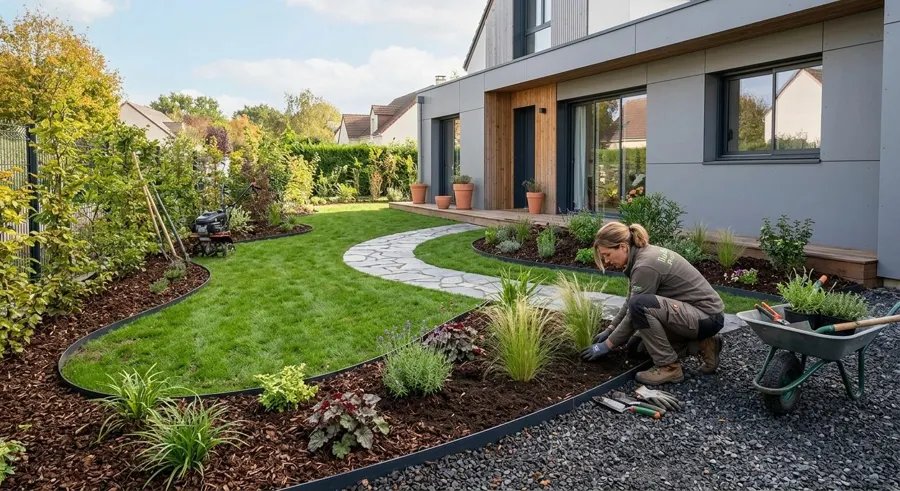
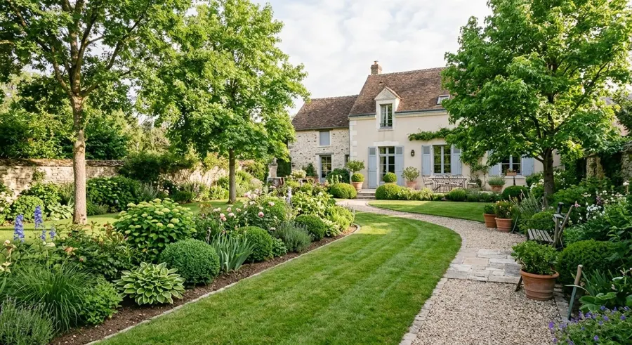
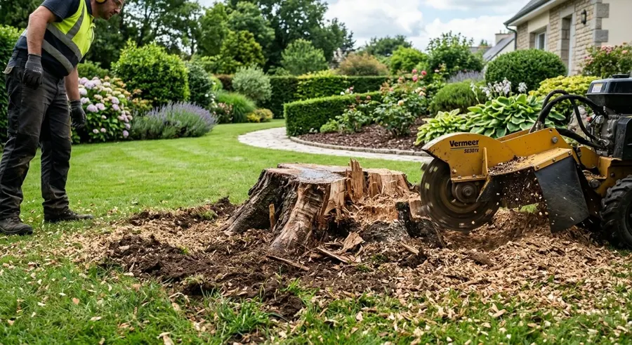
Créer
Préparer la terre, planter, structurer l'espace
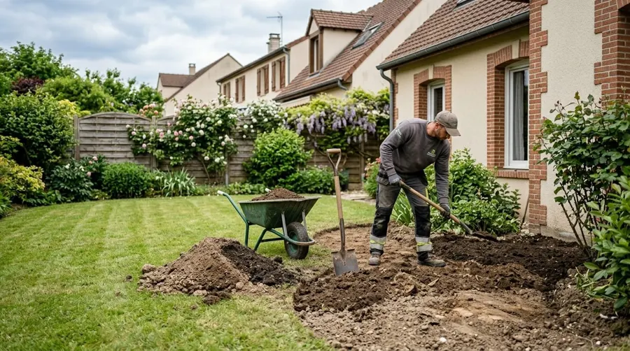
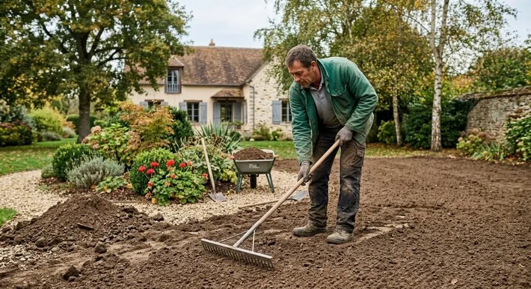
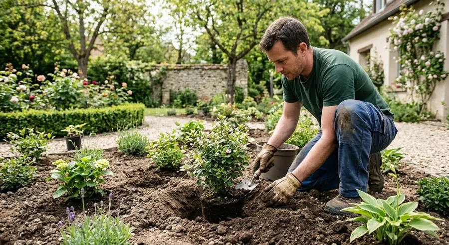
Images d'illustration. Les photos de vos chantiers réels viendront les remplacer.
Entretenir
Haies, pelouses, massifs et allées
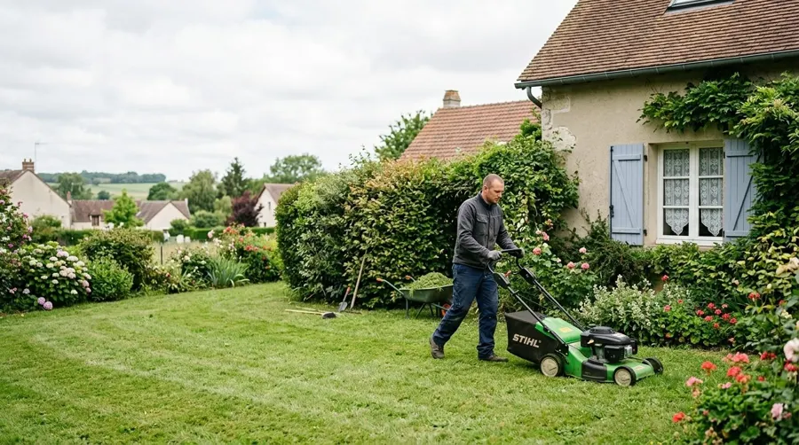
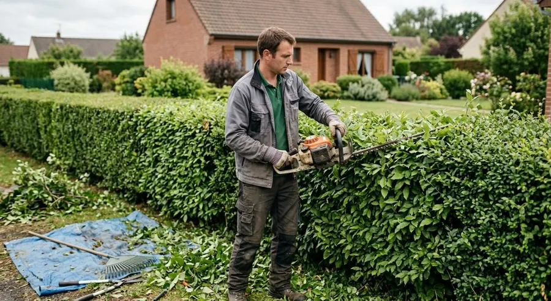
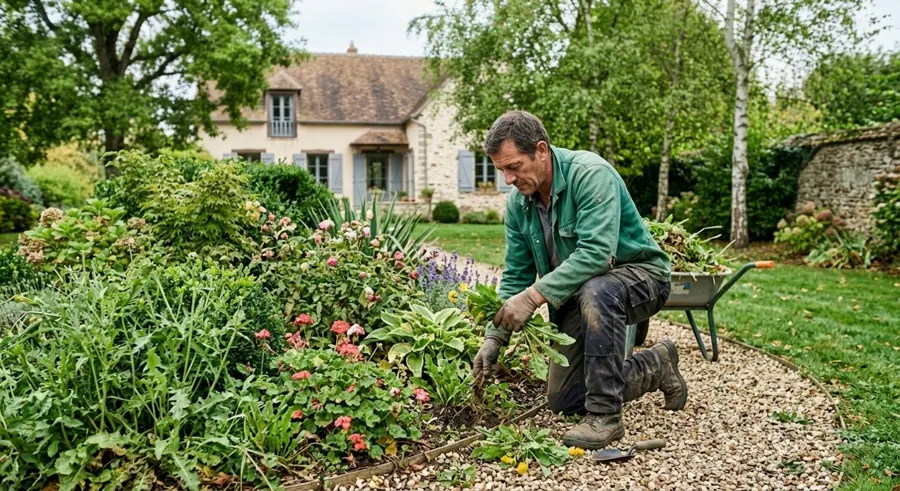
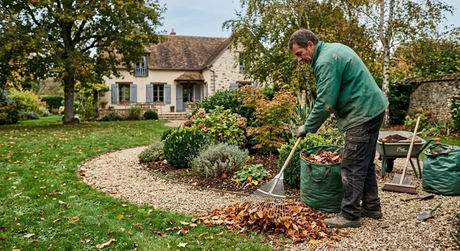
Arbres et déchets verts
Élagage, dessouchage et évacuation
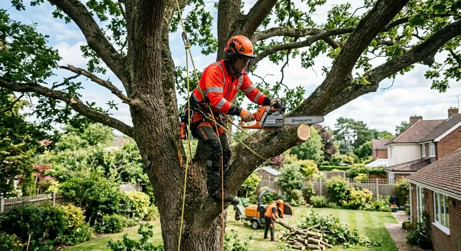
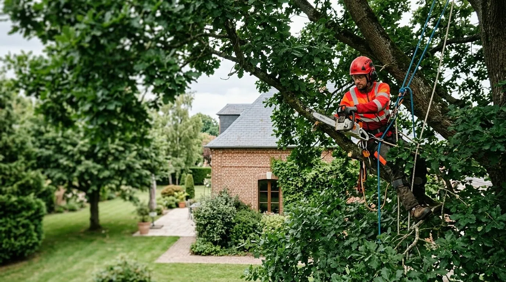
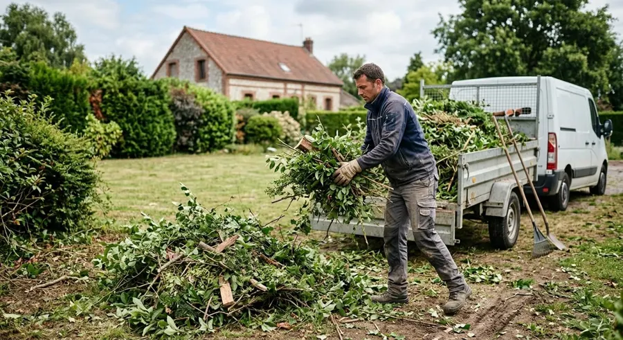
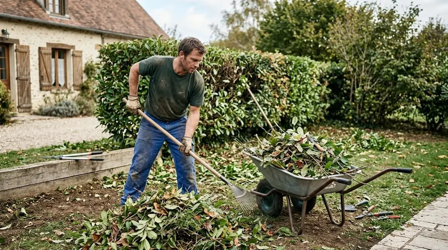
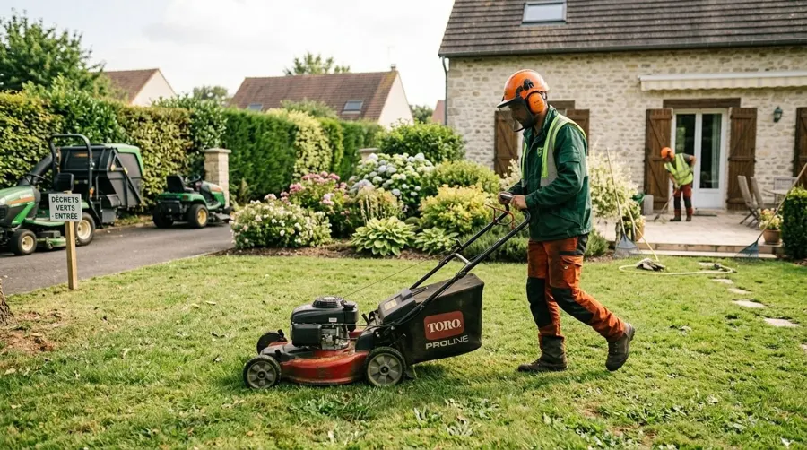
Votre projet
Un chantier qui ressemble au vôtre ?
Montrez-nous votre terrain ou décrivez-le. Nous regardons ce qui peut être fait et nous revenons vers vous.
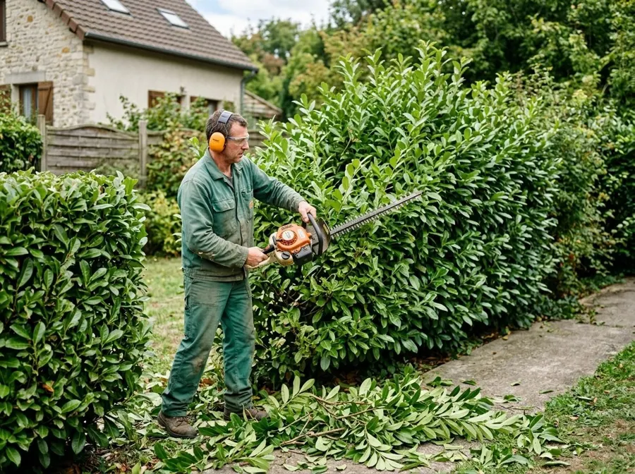